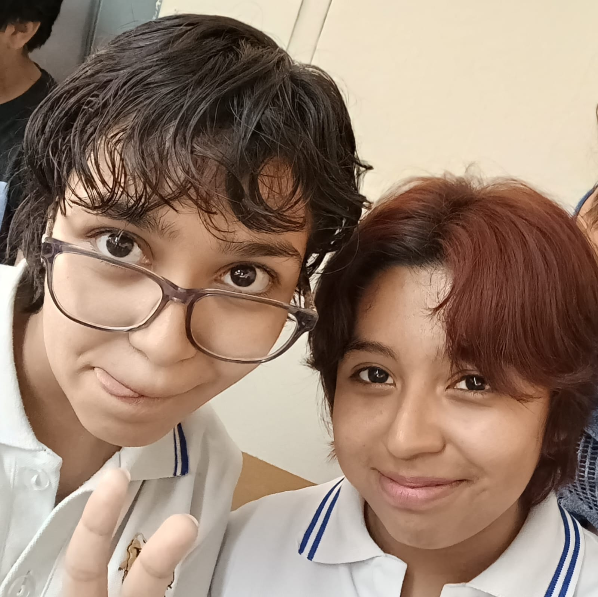

TEAM-CHERRY
"Ningún costo demasiado grande. Ninguna mente para pensar. Ninguna voluntad que quebrar. Ninguna voz que grite sufrimiento. Nacido de Dios y el Vacío. Sellarás la luz cegadora que plaga sus sueños. Tú eres el Recipiente. Tú eres el Hollow Knight."
Hollow Knight es una experiencia creada para quienes disfrutan perderse en
mundos llenos de misterio, explorar cada rincón con curiosidad y descubrir
historias ocultas detrás del silencio. En Hallownest no existen caminos
sencillos ni respuestas inmediatas; cada zona, cada enemigo y cada personaje
guardan algo que convierte el viaje en una aventura inolvidable.
Este juego destaca por su increíble dirección artística, su ambientación melancólica y una banda sonora que acompaña perfectamente cada momento dentro del reino caído. Desde enormes ciudades abandonadas hasta profundas cavernas cubiertas de oscuridad, todo en Hollow Knight transmite una sensación única de soledad, grandeza y descubrimiento.